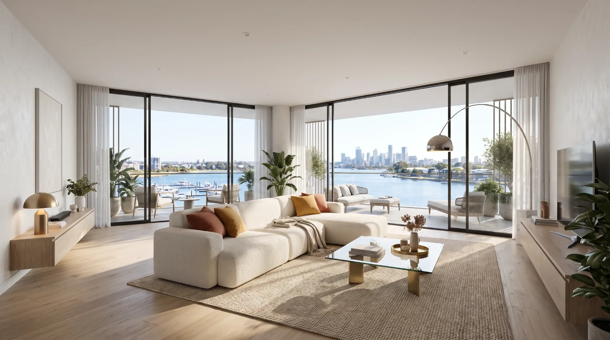
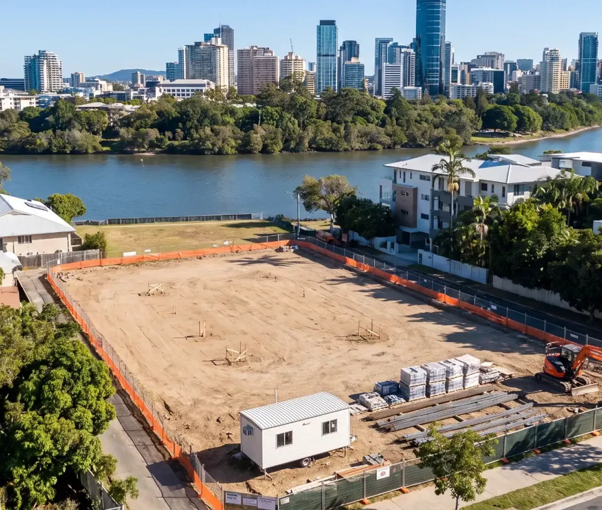
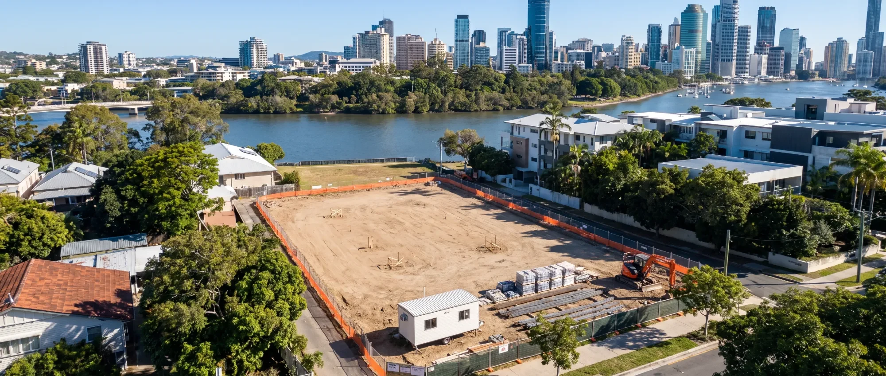
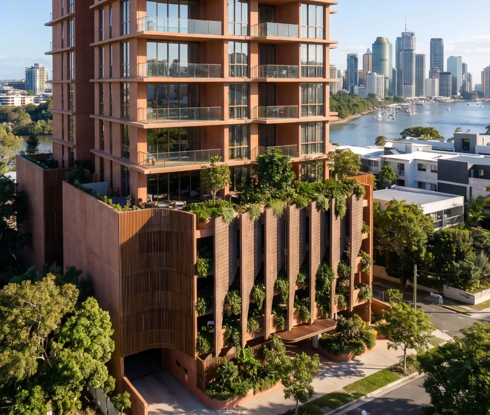
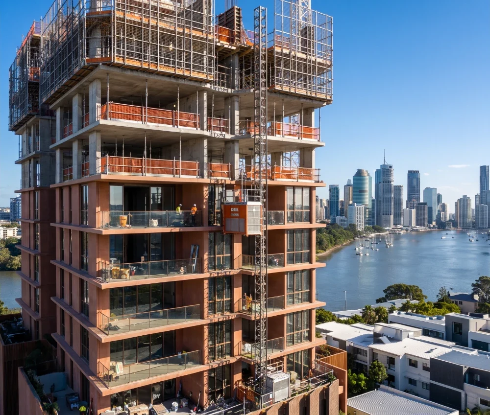

The residences
Eighty-eight homes with one to three bedrooms. Balconies face the river or the trees to the west. Registered buyers get floor plans and pricing first.

Interior concept

A new residence is rising beside the river.
22-24 Sylvan Road, Toowong
The site. 1,760 square metres on the corner of Sylvan Road and Landsborough Terrace.
The structure. Fifteen storeys, rising behind the heritage-listed Regatta Hotel.
The residence. Eighty-eight homes above the river.
BDA Architecture has designed a tower of 88 homes on the corner of Sylvan Road and Landsborough Terrace, behind the Regatta Hotel. Its shape comes from the Brisbane River and from the shade the trees cast along its banks.
The homes have one to three bedrooms. Shops and hospitality take the ground floor, and residents share a landscaped rooftop.
Development application lodged with Brisbane City Council

The river is to the east of the site, and trees shade the streets around it.
In this concept visualisation, the podium brings that shade down to the street as a screen of terracotta fins with planting between them. Higher up, the balconies open to the river.
Eighty-eight homes with one to three bedrooms. Balconies face the river or the trees to the west. Registered buyers get floor plans and pricing first.

Interior conceptThe top of the tower is a landscaped deck for residents, with the river and the city below.
Shops and hospitality on the ground floor keep the corner of Sylvan Road open to the neighbourhood.
All images are AI-generated concept visualisations, not final design.
Ferry, train and bus stops are all close by, and the city is a short trip east.
The heritage-listed riverside hotel, built in 1886, shares a boundary with the site.
The site looks east across the river to the city.
River services from the Regatta terminal, a short walk from the door.
Trains on the Ipswich and Springfield lines, a short walk up the road.
The local shopping centre, for groceries and everyday errands.
The St Lucia campus, a short trip south.
To the west, the site looks over Sylvan Road to the Wests Rugby Union Club grounds.
Direct routes into the city by road, rail and river.
Immerse Projects is a privately owned residential developer founded by John Kearney, a builder raised on the Gold Coast in a family of property developers. Its construction arm, Greyburn Building Contractors, builds what Immerse plans, so the same company runs a project from design to handover.
22-24 Sylvan Road is the company's first Brisbane development. Its earlier projects are in south-east Queensland and northern New South Wales.

Register to get floor plans, pricing and release dates when they are published. Registered buyers hear first.